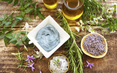

INGREDIENT POLICY
NO PARABENS
Our skincare products are PARABEN FREE. In response to CUSTOMERS CONCERNS we manufacture (and label) paraben-free products. We use very small amounts of selected alternative safe preservatives that are non-persistent in the environment.
Although parabens are highly effective in preventing the growth of fungi, bacteria and yeast that could cause products to spoil, thus enhancing the shelf life and safety of products, the use of parabens in beauty and pharmaceutical products has become INCREASINGLY CONTROVERSIAL.
A report by Dr Phillippa Darbre found parabens in samples of human breast tumour tissues but she also found quantities of parabens in “blank” samples that did not contain any tissue at all. Also, Dr Darbre’s research is based on an extremely small sample of 20 breast tumour cases and does not include any reference samples from normal tissues.” Thus, the significance of her results is not easy to ascertain. Also, extensive independent research has previously shown that any traces of parabens that might enter the skin are completely broken down by skin cells to harmless substances that cannot pose any risk of breast cancer.
Although parabens have displayed the ability to slightly mimic oestrogen (a hormone known to play a role in the development of breast cancer) and have been found in very small amounts in some breast cancer tumours, the latest scientific studies have shown this interaction to be very weak, observed only with extremely high doses far greater than anyone would be exposed to under actual conditions of use or with repeated use.
Many materials found in plants used as food also have a weak estrogenic effect in cellular studies. These naturally occurring materials are called phytoestrogens and are present in soy and other fruits and vegetables. Some of these phytoestrogens, when tested in the same way as parabens, give similar results. However, parabens have been shown to be 10,000 times weaker than the most potent phytoestrogens and 100,000 times less potent than estradiol, the estrogen produced naturally by the body. Also, the studies that are frequently cited to support a link between parabens and endocrine disruption are in vitro and animal studies, both of which are difficult to link to effects in humans. The in vitro studies that showed that parabens had estrogenic effects were animal studies, primarily in rats. Obviously humans aren’t rats so a lot of substances don’t act the same way, much like how chocolate and xylitol are both fine (and beneficial) for humans, but not dogs. Additionally, very high doses were used in the animal studies, which don’t translate to the very small concentrations (typically less than 0.3%) used in cosmetics and personal care products. Things that are bad at high doses aren’t always bad at low doses; for example, drinking too much water leads to lethal hyponatremia. Additionally, the vast majority of the studies looked at feeding or injecting the parabens; very few of the studies actually involved applying parabens to skin.
Most scientists and virtually all regulatory bodies who have reviewed these studies aren’t too worried about parabens and there is no conclusive evidence to show that parabens cause breast cancer, but there is still a lack of evidence on both sides to conclude this debate.
Just to confuse things a little more, did you know that Parabens have been used as food preservatives for many decades? Typical products which contain parabens for preservation include beer, sauces, desserts, soft drinks, processed fish, jams, pickles, frozen dairy products, processed vegetables and flavouring syrups. Chances are that the foods you eat on a regular basis contain parabens as preservatives.
For a paraben to make it all the way into your body via your personal care products is a long and difficult route. This doesn’t mean parabens don’t absorb into your body, but it’s not the most direct route to get there. If you wanted to get parabens into your body quicker, you’d eat them.
The point I am making is that many consumers put a lot of effort into avoiding parabens in their skincare at all cost, only to be ingesting seemingly large quantities in their food and drink.
If you still prefer not to use parabens in your cosmetics to limit exposure levels ,then consumers who use our products do not have to be concerned as we use alternative preservatives in our skin care range.
Some of the major parabens used in cosmetics are: benzylparaben, butylparaben, ethylparaben, isobutylparaben, methylparaben, and propylparaben.
What Does Natural mean in the world of Cosmetics
There is no universally accepted definition of what it actually means to be natural. Logically it is quite possible to argue that everything is natural, or that nothing is natural. While nobody can tell you exactly what is natural and what is synthetic in any rigorous way, the answer is not so straightforward. Each person has a different interpretation and definition of the term natural. With the added complication of being a widespread global industry which currently does not have regulation or governance guiding terminology, that leaves the natural formulator and customer confused about what to call or define as natural or unnatural.
The answer is almost always: it depends on your definition of natural. and on your overall concept and philosophy.
Individual associations and certifying organizations have different definitions of the word natural. One particular ingredient considered “natural” by one organization might not be accepted as “natural” by another.
You may define “natural” as :
- existing in nature
- not synthetic
- coming from nature
- derived from natural resources
- natural-identiacal
- being made with no chemical reactions
- and so on.. read more
Do not tar Behentrimonium Methosulfate with the same brush as Sodium Laureth Sulfate(SLES) or Sodium Lauryl Sulfate(SLS)
Do not confuse Behentrimonium methosulfate with Sodium Laureth Sulfate(SLES) or Sodium lauryl sulphate(SLS). Although SLES is similar to SLS, it’s put through an additional process called ‘ethoxylation’, in order to make it gentler on the skin. Sodium Laureth Sulfate (SLES) is an ingredient derived from ethoxylated lauryl alcohol and used as a surfactant. It is also an ingredient that is sometimes contaminated with toxic manufacturing impurities such as 1, 4-dioxane and ethylene oxide), Both ethylene oxide and 1,4-dioxane have the potential to be carcinogenic — but the chemistry of surfactant synthesis ensures that the ethylene oxide is completely used up and, if any traces of 1,4-dioxane remain, they are at least 6,000 times lower than the level which could pose a potential threat to human health. Sodium Laureth Sulfate’s (SLES) contamination with unwanted by-products is the reason that it’s considered by many as a hazardous ingredient. These two are confused with Behentrimonium methosulfate which is not contaminated with toxic manufacturing impurities and does not contain ethoxylated ingredients.
There is a blanket generalization about sulphates they are judged prematurely without having all the facts. The rationale behind avoiding certain key ingredient words is a bit complicated and not as simple as "good" or "bad." Actually, it is a lot more complicated. The miseducation of the naturalista has led to the ultimate fear of certain ingredients for what sometimes seem to be pretty irrational reasons from a scientific perspective. Many consumers are concerned about sodium laureth sulphate (SLES) and other sulfates in their cosmetics products because of widespread misinformation about SLES and SLS causing Cancer. Despite the scare stories, there’s actually no proven link between SLS or SLES and cancer: on this many medical and industry associations agree. For instance - Industry research states: “There’s no evidence to suggest that sodium lauryl sulfate causes cancer – so there’s no need to stop using shampoo. Cosmetics are under tight regulation in Europe and have to be shown to be safe before they can be sold.”
Technically, a sulfate is a salt that consists of a sulfur atom, four oxygen atoms, and some other form of counter ion. Sulfates are commonly found in the environment—for example, there’s magnesium sulfate (aka Epsom salts). In personal care, the term ‘sulfate’ is often a form of shorthand for a very specific type of a sulfate-containing compound. Here, sulfates refer to a class of sulfate salts with a fatty acid. These are very efficient cleansers used in shampoos, body washes, and toothpastes.
Behentrimonium Methosulfate : NOT TO BE CONFUSED WITH Sodium Laureth Sulfate(SLES) or Sodium lauryl sulphate(SLS), and although technically a sulfate it is an anti-static and hair-conditioning agent, commonly used as a detangler and conditioner for hair and has different sulphate-like compounds, with functions that are very different from cleansing sulphates. This sulfate is not typically what people think of when the term ‘sulfate-free’ is used, it ranks 0; and c) on the EWG Cosmetic Database, it states behentrimonium methosulfate as a low hazard ingredient, it does not appear to be toxic to humans or to the environment AND DOES NOT CONTAIN ethoxylated ingredients. It is an example of a quaternary ammonium ingredient that contains the sulfate compound (SO42-), but due to it being a cationic surfactant, the chemical process to produce this ingredient is less irritating and creates a more neutral/stable compound. As a matter of fact, this particular ingredient has the ability to impart some great conditioning properties to the hair by increasing slip and aiding in closing the cuticle, due to its cationic nature. Confusing? Absolutely in a Lather! Just keep in mind that not all sulfates are the same, and there are plenty of them that are completely safe and beneficial in skincare and hair-care formulations.
Once organizations and companies build up fears among consumers about certain cosmetic ingredients there’s almost no going back, the damage is done, but if you can look past the scare tactics and really base your opinion with a little more science you’ll find the Sulfates (Sodium Laureth Sulfate (SLES)and Sodium lauryl sulphate(SLS)) can be perfectly fine ingredients in wash off skin products which do not remain on the skin for prolonged periods of time. This is because it’s a rinse-off product — the contact time is short and, after rinse-off, there is extremely little SLS (if any), which stays on the skin/scalp.
Irritation from SLS is unlikely, even among people who have sensitive skin or suffer from eczema, provided that the shampoo is rinsed off thoroughly. In fact, the risk is so small that there are no EU limits on the usage of SLS in wash-off products, as irritation only occurs with products that are left on the skin.
Ingredients A - Z
Ingredients we do use below
Apricot Fruit Extract (Prunus armeniaca)
Apricot is rich in vitamin A, vitamin C, potassium, iron, phosphorus, and calcium. Perfect for any type of skin. Gives fesh apricot scent and skin refreshing properties.
Behentrimonium Methosulfate
It is naturally derived from Colza oil or what is commonly known as Rapeseed Oil, and is noted for its exceptional mildness. It is a quarternary ammonium salt and used mostly as a hair conditioning agent, and an anti-static agent; an effective ingredient for de-tangling hair because this ingredient directly deposits onto the hair follicle to smooth out the cuticles. Highly regarded for its conditioning abilities it can be found in many hair products like conditioner, detangler, shampoo and styling gel. It also acts as an emulsifying agent, gentle enough to be used in baby products that are left on the skin. When used in lotions and creams it gives a soft and powdery after-touch to the skin. The EWG Cosmetic Database states behentrimonium methosulfate as a low hazard ingredient, it does not appear to be toxic to humans or to the environment AND DOES NOT CONTAIN ethoxylated ingredients. Please note that this ingredient is not to be confused with Sodium lauryl sulphate of which there is a lot of confusion and misinformation on the internet.
Benzyl Alcohol
Organic alcohol that is considered safe and occurs naturally in some fruits (apricots, cranberries) and teas. Its chief function in cosmetics is as a preservative, and it’s among the least sensitizing preservatives in use. This cosmetic preservatives is allowed by Ecocert and COSMOS and is considered more skin friendly than some traditional preservatives. It is naturally occurring in botanicals and so is considered by the certifying bodies to be suitable for products marketed as natural. High amounts of benzyl alcohol can impart a noticeable floral-like scent to products, as it is part of the fragrance makeup of some essential oils such as jasmine.Benzyl Alcohol, Benzoic Acid and its salts, and Benzyl Benzoate are used in a wide variety of cosmetics and personal care products, including baby products, bath products, soaps and detergents, eye makeup, blushers, cleansing products, make up products, as well as hair, nail and skin care products.
Benzoic Acid
Another cosmetic preservatives which is allowed by Ecocert and COSMOS which again is considered more skin friendly than some traditional preservatives. Again this is a compound found naturally in many foods such as apples, apricots, snap beans, and cranberrie and so is considered by the certifying bodies to be suitable for products marketed as natural.
Castor Oil (Ricinus communis) - Organic
Cold=pressed from the castor bean, this oil has a unique fatty acid composition and despite its thick consistency, is deeply absorbed by the skin. Soothing, moisturising and protective, it is also considered anti-inflammatory. It gives these benefits to our lip products and baby balm. .
Cetearyl Alcohol
A solid wax produced from coconut oil which supports the consistency, emollience and moisturisation of our creams and lotions. Not to be confused with ethyl alcohol (ethanol/methanol).
Cetyl Alcohol (vegetable)
Cetyl Alcohol is a fatty alcohol used as an emulsion stabilizer and opacifier, adding body and viscosity to creams and lotions, and improving texture and feel with its characteristic velvety texture. It imparts emollient properties to formulations due to its absorption and retention in the epidermis where it lubricates and softens the skin.
Crambe Seed Oil (Crambe Abyssinica Seed Oil)
Crambe Abyssinica has been grown in the UK for many years, but many people haven't heard of it. It originates in the Mediterranean region and parts of eastern Africa, it ranges from light to golden yellow in colour and is cold pressed from seeds. The wonderful quality of this oil is that it has higher quantities of Erucic Acid than Jojoba oil. Erucic Acid is a monosaturated omega-9 fatty acid which is high in the Brassica family. Omega-9 fatty acid helps to give a glossy shine to hair just like silicone would, so therefore also gives shine and gloss to dull and lifeless skin without making it greasy. In using this oil you help your skin to improve its barrier function, therefore preventing your skin from drying out too quickly. It also has a highly biodegradable profile, and as a result this oil has been used as a natural substitute for synthetic mineral oils.
Coco-caprylate/caprate
A skin-conditioning agent naturally derived from coconut oil to provide high hydration and emollient substances, which are added to cosmetic products to help softens, smoothes or lubricates the skin.
Coco Glucoside
An extremely gentle, eco-friendly foaming cleanser made by the fermentation of corn sugar and coconut.
Cocoa Butter (Theobroma cacoa)
Cocoa butter is exceptionally high in antioxidants which help to fight damaging free radical oxygen, that contribute to skin ageing and depletion. This makes it great for protecting skin from the elements, and nourishing it after sun exposure. Cocoa butter’s high fatty acid profile ensures skin is nourished on a deep level, it contains up to 39% Oleic acid (Omega 9) which promotes skin suppleness, and the butter has been used on a variety of skin conditions including calming skin sensitivities such as eczema, and aiding healing of scars and stretch marks. The positive effect on eczema is probably from cocoa butter’s polyphenol content, which inhibits the production of the immuno globulin that aggravates skin conditions. Its deep hydration of the skin promotes skin regeneration and health, reducing the potential for scarring.
C12-15 alkyl benzoate
C12-15 alkyl benzoate is a naturally occuring ester of benzoic acid. Sounds scary, right? C12-15 alkyl benzoate is created from a reaction of Benzoic Acid and C12-15 Alcohols. Benzoic acid is a white crystalline acid found naturally in benzoin, cranberries, and coconut oil. Animal fat, vegetable oils and butters are all esters with the biggest difference being the melting point of the mixture of esters. C12-15 alkyl benzoate is rated a 0-1 on the cosmetic safety review database and is an incredible emollient, which helps to soften and smooth the skin. It is also the silkiest of all esters, which makes it a favorite choices for baby bath and body products. Even though it sounds pretty scary, rest assured that it is extremely safe and even quite beneficial for your skin!
Decyl Glucoside
Decyl Glucoside is a, natural, non-ionic surfactant, ideal for all foaming and cleansing products. Like Coco Glucoside, Decyl Glucoside is , obtained from renewable raw materials, through a combination of plant based fatty alcohols (coconut c8-16) and glucose (sugar / starch). Decyl Glucoside is a mild, and gentle, surfactant and because it does not dry the skin it is ideal for the formulation of personal hygiene and toiletry products. Decyl Glucoside does not contain any impurities. Its chemical nature and the production process results in a surfactant without ethylene oxide or 1,4-dioxane and is suitable for baby, and pet, products.
Dehydroacetic acid
Dehydroacetic acid can be considered as an organic compound that is accepted in the usage of natural cosmetics. Another cosmetic preservative which is allowed by Ecocert and COSMOS and considered more skin friendly than some traditional preservatives.
Geranium (Pelargonium Graveolens) - Organic
A beautifully fragrant essential oil with an herbaceous rose-like scent. It has restorative, toning and balancing properties for all skin types, especially mature skin. Considered hormonally balancing, it can also ease PMS and menopausal symptoms.
Glyceryl Oleate (vegetable origin)
Derived from Glycerin and Oleic Acid—fats extracted from vegetable oils. A safe emollient that makes skin soft. It does this by creating a protective barrier on the skin that slows down water loss. In addition, it is used to thicken emulsions.
Grapefruit (Citrus Paradisi) - Organic
Expressed from the peel of ripe grapefruit this essential oil can be uplifting at times of stress and pressure and is gently toning to the skin.
Isoamyl Cocoate
A natural emollient ester derived from sugar beets and coconut oil. It's a very light liquid that absorbs quickly into the skin and has a non-oily skin feel.
Isoamyl Laurate
Conditioner, obtained from esterification of lauric acid (from vegetable oils) and isoamyl alcohol (from fermentation).
Jojoba (Simmondsia chinensis) - Organic
Cold-pressed from the seeds of a sub-tropical shrub, this unique liquid wax has a similar composition to the skin’s natural oils. Antioxidant, light-textured and quickly absorbed, it has excellent moisturising qualities for all skin types. Studies also show it has anti-inflammatory benefits too.
Lavender (Lavandula Angustifolia) - Organic
A beautifully fragrant essential oil with many qualities for skin and senses. Deeply relaxing it is highly effective for muscular aches, headaches and insomnia. An excellent all-round first aid remedy, it can be sparingly applied neat to burns, minor wounds, spots, insect bites etc.
Lemon (Citrus Limonum) - Organic
Cold expressed from the peel of ripe lemons, this fresh, vibrant essential oil is uplifting, refreshing, antibacterial and toning for oily and dull complexions. Excellent as a room freshener.
Lemon Fruit Extract (Citrus Medica Limonum)
Lemon frut extract is rich in vitamin A, vitamin C, potassium, iron, phosphorus, and calcium. Perfect for any type of skin. Commonly referred to as Lemon, the yellow fruit is grown on small trees in the Mediterranean. This oval-shaped fruit grows amongst white blossoms and emits a fresh and invigorating fragrance. The peel is comprised of invigorating essential oils, made up of components such as Limonene, Citral and Coumarin. Lemon Oil possesses skin-tightening and toning effects. It also serves as a purifying disinfectant, making it ideal for treating oily, tired and stressed skin.
Maltodextrin
Is a long chain sugar or polysaccharide derived from rice, corn or potatoes. It stabilises or binds other ingredients and helps in film forming.
Mango Fruit Extract (Mangifera Indica)
Mango Fruit extract is rich in vitamin A, vitamin C, beta carotene,potassium, iron, phosphorus, and calcium, it is a member of the cashew family. Perfect for any type of skin. It is often used in formulations to help prevent the appearance of fine lines and the drying of skin. By preventing the deterioration of the skin, it helps to maintain the elasticity of the skin.
Mica
A natural mined mineral which imparts a light-reflecting sheen to our some of our colour cosmetics. It is ecologically and ethically obtained according to organic standards.
Neroli Oil (Citrus Aurantium amara)
Neroli oil is extracted from the blossoms of the bitter orange tree (Citrus aurantium amara), which belongs to the Rutaceae plant family. They are hardy citrus plants. They are evergreen and grow up to 20 feet in the wild. In cultivation, they will only grow to half this height. The tree bears double leaves, which have a bulge at the base of the main leaf. Apart from its beautiful scent it is often used by aromatherapists to help treat anxiety. Some essential oils are classed as synergistic in aromatherapy. This means that, when mixed, oils take on the characteristics of each other and have a stronger effect on the body. Neroli and lavender are reputed to have a strengthening effect on the elasticity of the skin.
Oatmeal (Avena sativa) - Organic
Long used for the relief of itchy, irritated skin, oats are soothing and emollient. Finely milled, their gentle exfoliation helps leave skin soft and smooth.
Patchouli (Pogostemon Cablin) - Organic
An essential oil with a rich, earthy/woody aroma, helpful for relieving emotional stress and dry, cracked or ageing skin.
Parfum
Our fragrances are allergen-free. This means they do not contain any of the 26 potential allergens outlined in the seventh amendment of the EU cosmetics directive and are less harsh on your skin. Parfum is a generic word which under EU law is required to identify any product, even essential oils that are used to supply fragrance or aroma to a cosmetic. Parfum can be natural or synthetic or a blend of essential oils, however, if added for fragrance they should legally be called parfum.
Pineapple Extract (Ananas comosus)
Pineapples contain the fruit enzyme 'bromelain' which hydrolyzes proteins and digests dead cells on the surface of the skin. Bromelain is classed as a protein in cosmetics and functions as a skin conditioning and lytic agent. It is used mainly as an exfoliate and to sooth inflamed, sore skin.
Raspberry Fruit Extract (Rubus Idaeus)
Contains Vitamin C as well as polyphenols. These prevent skin damage and signs of ageing, while nourishing and firming the skin. But polyphenols really go the distance, providing even more benefits for your skin. These include: - scavenging free radicals that can be a source of inflammation – Protecting against light damage on the skin – Strengthen the outer layer of the skin so that it is more resistant to intruders
Rose (Rosa damascena, centifolia) - Organic & Biodynamic
It takes the petals of around 1kg of roses to produce 1-2 drops of pure rose otto essential oil. We use both the precious essential oil and hydrolat of these exquisitely fragrant petals for their unrivalled uplifting fragrance and skin benefits. Highly antioxidant, the hydrolat contains vitamins A,B,C,D, E, along with 21 amino acids and a broad spectrum of minerals giving it amazing skin calming, soothing, toning and cell regenerative qualities, particular beneficial to sensitive and ageing skin.
Rice Flour
Rice flour has a chemical structure similar to ceramide, which increases collagen production to make skin more supple. As well is it's culinary uses as a gluten-free alternative to wheat flour, Rice Flour (powder) is a widely known cosmetic ingredient to treat blemishes, wrinkles and pigmentation. In fact it has been used as an anti-aging skin treatment in many Asian countries for centuries. The Geishas in Japan, for example, use rice flour in their beauty routine and despite their heavy makeup, their skin remains porcelain smooth. Field workers in various Asian countries often apply a paste made from rice flour and water to protect their skin from the sun. Besides offering some UV protection, rice flour has exfoliating properties so can help keep skin looking brighter.
Shea Butter (Butyrospermum Parkii) - Organic & Fairtrade
Direct from a women’s co-operative in Africa, our raw shea (karite) butter is highly moisturising and emollient to skin and hair. It is therefore useful for skin care as it has sun screening properties and acts as an emollient and skin moisturizer. Only raw, unrefined shea butter contains the plant sterols and antioxidants which give it the most benefits. The main benefits range from promoting healing, cell renewal, skin suppleness to reducing irritation, inflammation, muscular pain, sun damage, scar and stretch mark formation. Topical use of Shea butter has also demonstrated anti-aging and anti-inflammatory properties. Shea butter is the fat extracted from the nut of Africa Shea tree (Vitellaria paradoxa). It is also used as a substitute for Cocoa butter in chocolate industries. It is edible and used as cooking fat in Africa. The saponifiable fraction of Shea butter is composed primarily of stearic and oleic acids with lesser amounts of palmitic, linoleic and arachidic acids while the unsaponifiable fraction of Shea butter is composed of bioactive substances that are responsible for Shea butter’s medicinal properties. Shea butter is solid at room temperature and melts at body temperature.
Sorbic Acid
Sorbic acid, or 2,4-hexadienoic acid, is a natural organic compound used as a food preservative. It has the chemical formula C6H8O2. It is a colourless solid that is slightly soluble in water and sublimes readily. It was first isolated from the unripe berries of the rowan tree (Sorbus aucuparia), hence its name. Another cosmetic preservative which is allowed by Ecocert and COSMOS and considered more skin friendly than some traditional preservatives
Stearic Acid (vegetable derived)
There are a lot of misconceptions and inaccurate statements about Stearic acid floating around the internet. Stearic acid in cosmetics is actually a fatty acid that is derived from animal and vegetable fats (We use vegetable derived stearic acid in one of our products). It is found in many natural foods including chocolate, cocoa butter, coconut oil and other vegetable oils, lard and other animal fat. For some consumers this whole issue has become almost a psychological obsession going way beyond any logical reasoning. Some people regularly eat a piece of pie, cookie, or other sweet or junk food, or consume chocolate (which has tons of stearic acid) without any concerns, but get all worked up about insignificant amounts found in vitamin capsules. It defies logic . A person who eats a chocolate bar will ingest hundreds of times more stearic acid than someone taking a dietary supplement with magnesium stearate (the anion form of stearic acid). Fatty acids are basically just what they sound like, a molecule that is part fat-like and part acid. While fatty acids have several purposes, the greatest and most essential is in the makeup of the membranes that surround all our cells in our body. They become combined with other molecules to form the barrier that separates our cells from each other and their surroundings. Depending on what study you look at, stearic acid itself makes up around 30% of the fatty acids in our cell membranes. Yes, stearic acid makes up about 30% of a group of molecules that are absolutely required for ANY known living organism. There is no evidence that small amounts of stearic acid are harmful. So where did that concept come from? It came from an experiment by scientists who isolated T-cells and B-cells from mice, put them in a Petri dish, and bathed them in a solution containing stearic acid (along with some other components). They observed that the T-cells incorporated the stearic acid into their cell membrane, eventually de-stabilizing the membrane enough that the cell died. The researchers used T-cells from mice, and in this case, the results cannot be applied to humans. The mouse cells incorporated stearic acid into their membranes because they lacked the ability to de-saturate fatty acids. However, human T-cells do have the ability to de-saturate fatty acids, so even if you did bathe your T-cells in stearic acid, they would be able to maintain their membrane function. You can put an excess of any healthy substance around cells in a Petri dish and the cells can die. For instance, you can kill a cell if you put too high an amount of fish oil fatty acids near it in a cell culture, but that does not mean fish oil fatty acids, the omeag-3s, are harmful to you when ingested in reasonable amounts - in fact omega-3s are healthy fatty acids. What happens in an isolated cell in a Petri dish has little relevance to the actual ingestion of that substance since the dilution of the substance that ends up in trillions of cells in the body makes it insignificant. People or companies who use this type of in vitro study to make such a leap either do not understand medicine or science, or are purposely misleading consumers for marketing reasons.
Strawberry Extract (Fragaria vesca)
Rich in polyphenols and Vitamin C, Strawberry extract provides protection for the skin and has skin soothing properties. It is a wonderful toner that helps to reduce the appearance of pores. As well as anthocyanidins and anthocyanins, one of the main features of strawberry extract is the ellagic acid, which is being used as a post-sun exposure ingredient to prevent freckling and spots that might arise after UV exposure. It appears ellagic acid is a tyrosine inhibitor (tyrosine plays a role in melanin synthesis or melanogenesis). It can also reduce the destruction of collagen and act as an anti-inflammatory. One bonus is ellagic acid can help regenerate skin cells, which may lead to thickened skin, which can help reduce the look of aging.
Sunflower oil (Helianthus annuus) - Organic
The cold-pressed seeds of this special variety produces a light, quickly absorbed oil very high in antioxidant vitamin E and Omega 9 fatty acids. Other skin-beneficial nutrients include vitamins A, D, minerals, lecithin and squalene (natural skin constituents). Both moisturising and soothing, it helps promote healing and protection of the skin from free radicals and sun damage.
Tapioca starch Organic
Extracted from the edible root of a plant, it helps keep the skin soft and smooth and gives a velvety feel.
Watermelon Seed Oil (Citrullus Vulgaris Seed Oil )
Provides nourishing moisture without clogging the pores, which makes it an excellent choice for balancing the skin. The array of potent vitamins and minerals contained in the oil feed the skin and help it to flourish. Watermelon Seed Oil is useful in all kinds of skin care products due to the high content (up to 65%) of linoleic acid, an omega 6 essential fatty acid. It can be used for all skin types, even oily skin as it is a dry oil. Watermelon Seed Oil also has excellent pore size reduction qualities, so is good to use on large-pored skin. Watermelon seeds are very rich in B vitamins, especially niacin (up to 19% of daily value, which is essential for skin health), folic acid, thiamine, riboflavin, vitamin B6 and pantothenic acid and also contain high levels of magnesium and zinc.
Vitamin E (Trocopherol)
Tocopheryl acetate is a form of vitamin E, a natural skin-conditioning agent and antioxidant. It is the ester of acetic acid and tocopherol and is often used as an alternative to pure tocopherol (or undiluted vitamin E) because it is considered more stable and less acidic. Its substantiated benefits include enhancing the efficacy of active sunscreen ingredients, reducing the formation of free radicals from exposure to UV rays, promoting the healing process, strengthening the skin's barrier function, protecting the skin barrier's lipid balance, and reducing transepidermal water loss. Attributed with antioxidant, anti-aging, moisturizing, anti-inflammatory, and enhanced SPF properties, tocopherol acetate is valued both as a dietary supplement and skincare active. It is used in a variety of cosmetic and personal care products.